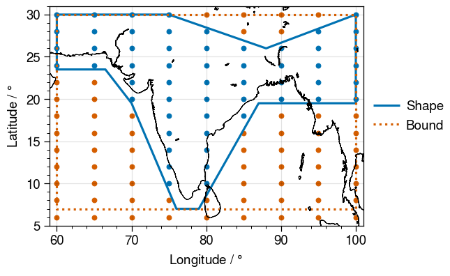

A Basic Primer to GeoRegions
In essence, a GeoRegion is:
- a geographical region that can be either rectilinear region (
RectRegion), or a polygonal shape within a specified rectilinear bound (PolyRegion). - identified by a
regID - itself a subregion of a parent
GeoRegion(identified byparID, which must itself be a validID)
When using GeoRegions.jl, the default GeoRegion should generally be the global domain, specified by GLB and given by the [N,S,E,W] coordinates [90,-90,360,0]. The Global GeoRegion GLB is considered to be a subset of itself.
See the documentation for GeoRegions.jl for more details on what GeoRegions are, and the GeoRegions.jl package.
NASAPrecipitation.jl reexports GeoRegion.jl
For ease of use, NASAPrecipitation.jl reexports all the functionality of GeoRegions.jl.
An Example of a GeoRegion
Let us plot an example GeoRegion. When a GeoRegion is called, NASAPrecipitation.jl will create a grid that spans the bounds of the GeoRegion (red dots), but will only download valid data in the shape of the GeoRegion (blue dots).

Predefined GeoRegions in NASAPrecipitation.jl
By default, NASAPrecipitation.jl will download all available data. This means
- For
IMERGDatasets, the data spans 89.95ºS to 89.95ºN - For
TRMMDatasets, the data spans 49.875ºS to 49.875ºN - For the TRMM Land-Sea Mask, the data spans 89.875ºS to 89.875ºN
In NASAPrecipitation.jl, we therefore define the GeoRegions GPM, TRMM and TRMMLSM in order to ensure that bounds of the GeoRegion we request do not go out of bounds of what is available. Upon loading NASAPrecipitation.jl for the first time during any Julia session, NASAPrecipitation.jl will check if these three GeoRegions exist. However, one can check if they exist at any point (and recreate them if they don't) using the function addNPDGeoRegions()
julia> using NASAPrecipitationjulia> resetGeoRegions() # Clear custom GeoRegions[ Info: 2022-01-09T04:11:27.852 - GeoRegions.jl - Resetting the custom lists of GeoRegions back to the default ┌ Warning: 2022-01-09T04:11:27.852 - GeoRegions.jl - Overwriting /home/runner/.julia/files/GeoRegions/rectlist.txt with original file in /home/runner/.julia/packages/GeoRegions/hj9hH/src/../extra/rectlist.txt ... └ @ GeoRegions ~/.julia/packages/GeoRegions/hj9hH/src/Read.jl:376 ┌ Warning: 2022-01-09T04:11:27.896 - GeoRegions.jl - Overwriting /home/runner/.julia/files/GeoRegions/polylist.txt with original file in /home/runner/.julia/packages/GeoRegions/hj9hH/src/../extra/polylist.txt ... └ @ GeoRegions ~/.julia/packages/GeoRegions/hj9hH/src/Read.jl:376julia> addNPDGeoRegions() # Checking to see if NASAPrecipitation.jl GeoRegions exists[ Info: 2022-01-09T04:11:27.897 - NASAPrecipitation.jl - Checking to see if GeoRegions required by NASAPrecipitation.jl have been added to the list of available GeoRegions [ Info: 2022-01-09T04:11:27.898 - NASAPrecipitation.jl - At least one of the required three GeoRegions (IMERG, TRMM, TRMMLSM) has not been added, proceeding to add them again ... [ Info: 2022-01-09T04:11:27.898 - GeoRegions.jl - Importing user-defined GeoRegions from the file /home/runner/work/NASAPrecipitation.jl/NASAPrecipitation.jl/src/NPDGeoRegions.txt directly into the custom lists [ Info: 2022-01-09T04:11:28.077 - GeoRegions.jl - Checking to see if the ID IMERG is in use ┌ Warning: 2022-01-09T04:11:28.128 - GeoRegions.jl - IMERG is not a valid GeoRegion identifier, use either RectRegion() or PolyRegion() to add this GeoRegion to the list. └ @ GeoRegions ~/.julia/packages/GeoRegions/hj9hH/src/Read.jl:448 [ Info: 2022-01-09T04:11:28.704 - GeoRegions.jl - Checking to see if the ID IMERG is in use ┌ Warning: 2022-01-09T04:11:28.704 - GeoRegions.jl - IMERG is not a valid GeoRegion identifier, use either RectRegion() or PolyRegion() to add this GeoRegion to the list. └ @ GeoRegions ~/.julia/packages/GeoRegions/hj9hH/src/Read.jl:448 [ Info: 2022-01-09T04:11:28.704 - GeoRegions.jl - Adding the GeoRegion IMERG to the list. [ Info: 2022-01-09T04:11:28.706 - GeoRegions.jl - Checking to see if the ID GLB is in use [ Info: 2022-01-09T04:11:28.706 - GeoRegions.jl - The ID GLB is already in use [ Info: 2022-01-09T04:11:28.706 - GeoRegions.jl - Retrieving information for the GeoRegion defined by the ID GLB [ Info: 2022-01-09T04:11:28.801 - GeoRegions.jl - Performing a check to determine if the Global IMERG Dataset GeoRegion (IMERG) is inside the Globe GeoRegion (GLB) [ Info: 2022-01-09T04:11:28.801 - GeoRegions.jl - The GeoRegion IMERG (Global IMERG Dataset) is indeed a subset of the GeoRegion GLB (Globe) [ Info: 2022-01-09T04:11:28.819 - GeoRegions.jl - Checking to see if the ID TRMM is in use ┌ Warning: 2022-01-09T04:11:28.819 - GeoRegions.jl - TRMM is not a valid GeoRegion identifier, use either RectRegion() or PolyRegion() to add this GeoRegion to the list. └ @ GeoRegions ~/.julia/packages/GeoRegions/hj9hH/src/Read.jl:448 [ Info: 2022-01-09T04:11:28.822 - GeoRegions.jl - Checking to see if the ID TRMM is in use ┌ Warning: 2022-01-09T04:11:28.822 - GeoRegions.jl - TRMM is not a valid GeoRegion identifier, use either RectRegion() or PolyRegion() to add this GeoRegion to the list. └ @ GeoRegions ~/.julia/packages/GeoRegions/hj9hH/src/Read.jl:448 [ Info: 2022-01-09T04:11:28.822 - GeoRegions.jl - Adding the GeoRegion TRMM to the list. [ Info: 2022-01-09T04:11:28.823 - GeoRegions.jl - Checking to see if the ID GLB is in use [ Info: 2022-01-09T04:11:28.823 - GeoRegions.jl - The ID GLB is already in use [ Info: 2022-01-09T04:11:28.823 - GeoRegions.jl - Retrieving information for the GeoRegion defined by the ID GLB [ Info: 2022-01-09T04:11:28.826 - GeoRegions.jl - Performing a check to determine if the Global TRMM Dataset GeoRegion (TRMM) is inside the Globe GeoRegion (GLB) [ Info: 2022-01-09T04:11:28.826 - GeoRegions.jl - The GeoRegion TRMM (Global TRMM Dataset) is indeed a subset of the GeoRegion GLB (Globe) [ Info: 2022-01-09T04:11:28.827 - GeoRegions.jl - Checking to see if the ID TRMMLSM is in use ┌ Warning: 2022-01-09T04:11:28.827 - GeoRegions.jl - TRMMLSM is not a valid GeoRegion identifier, use either RectRegion() or PolyRegion() to add this GeoRegion to the list. └ @ GeoRegions ~/.julia/packages/GeoRegions/hj9hH/src/Read.jl:448 [ Info: 2022-01-09T04:11:28.829 - GeoRegions.jl - Checking to see if the ID TRMMLSM is in use ┌ Warning: 2022-01-09T04:11:28.829 - GeoRegions.jl - TRMMLSM is not a valid GeoRegion identifier, use either RectRegion() or PolyRegion() to add this GeoRegion to the list. └ @ GeoRegions ~/.julia/packages/GeoRegions/hj9hH/src/Read.jl:448 [ Info: 2022-01-09T04:11:28.830 - GeoRegions.jl - Adding the GeoRegion TRMMLSM to the list. [ Info: 2022-01-09T04:11:28.831 - GeoRegions.jl - Checking to see if the ID GLB is in use [ Info: 2022-01-09T04:11:28.831 - GeoRegions.jl - The ID GLB is already in use [ Info: 2022-01-09T04:11:28.831 - GeoRegions.jl - Retrieving information for the GeoRegion defined by the ID GLB [ Info: 2022-01-09T04:11:28.850 - GeoRegions.jl - Performing a check to determine if the Global TRMM LandSea Mask Dataset GeoRegion (TRMMLSM) is inside the Globe GeoRegion (GLB) [ Info: 2022-01-09T04:11:28.851 - GeoRegions.jl - The GeoRegion TRMMLSM (Global TRMM LandSea Mask Dataset) is indeed a subset of the GeoRegion GLB (Globe)julia> GeoRegion("IMERG")[ Info: 2022-01-09T04:11:28.851 - GeoRegions.jl - Retrieving information for the GeoRegion defined by the ID IMERG The Rectilinear Region IMERG has the following properties: Region ID (regID) : IMERG Parent ID (parID) : GLB Name (name) : Global IMERG Dataset Bounds (N,S,E,W) : [89.95, -89.95, 360.0, 0.0] (is180,is360) : (false, true)
NASAPrecipitation.addNPDGeoRegions — MethodaddNPDGeoRegions() -> nothingChecks for the three GeoRegions (GPM, TRMM, TRMMLSM) required by NASAPrecipitation.jl, and adds them if they do not exist.